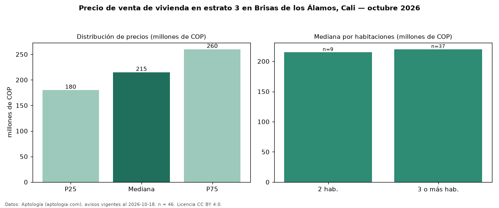

Precio de venta de vivienda en estrato 3 en Brisas de los Álamos, Cali — octubre 2026
En Brisas de los Álamos, Cali, la mediana de precio de venta de vivienda en estrato 3 es COP 215 millones, según 46 avisos vigentes. Por metro cuadrado, la mediana es COP 3,05 millones/m² (n = 46 avisos con área). Incluye todos los tipos de vivienda de estrato 3 del barrio; la mediana de apartamentos del barrio, sin filtrar por estrato, es COP 230 millones. El área mediana anunciada es 59 m². El segmento con más oferta es el de 3 o más habitaciones (37 avisos, mediana COP 220 millones); pasar de 2 habitaciones a 3 o más habitaciones cambia la mediana +2 %. La administración mediana declarada es COP 243.000 al mes (n = 22). La mitad central de los avisos va de COP 180 millones a COP 260 millones (razón 1,4), una dispersión moderada. Datos: Aptología (aptologia.com), CC BY 4.0 — https://www.aptologia.com/venta/cali/brisas-de-los-alamos. Archivos: PDF, CSV con las cifras y gráfica PNG.

| Avisos únicos | 46 |
|---|---|
| Percentil 25 | COP 180.000.000 |
| Mediana | COP 215.000.000 |
| Percentil 75 | COP 260.000.000 |
| Mediana por m² | COP 3.050.287 |
Fuente: avisos vigentes de portales inmobiliarios recopilados por Aptología, deduplicados (mínimo 30 avisos únicos por celda). Precios pedidos, no cerrados. Fecha: 2026-10-18.